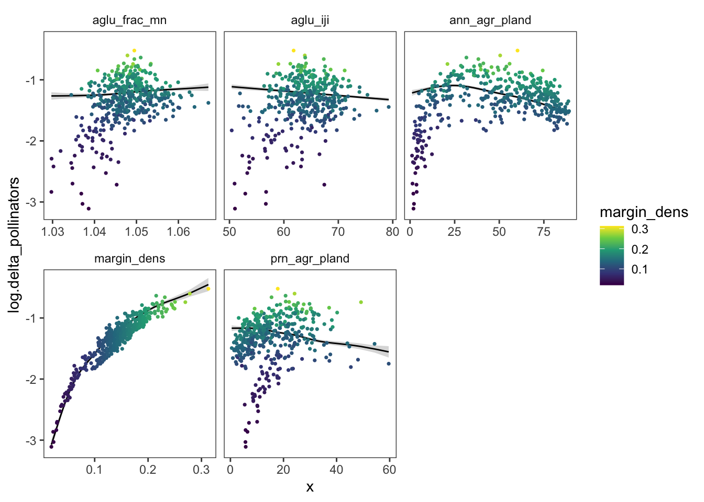
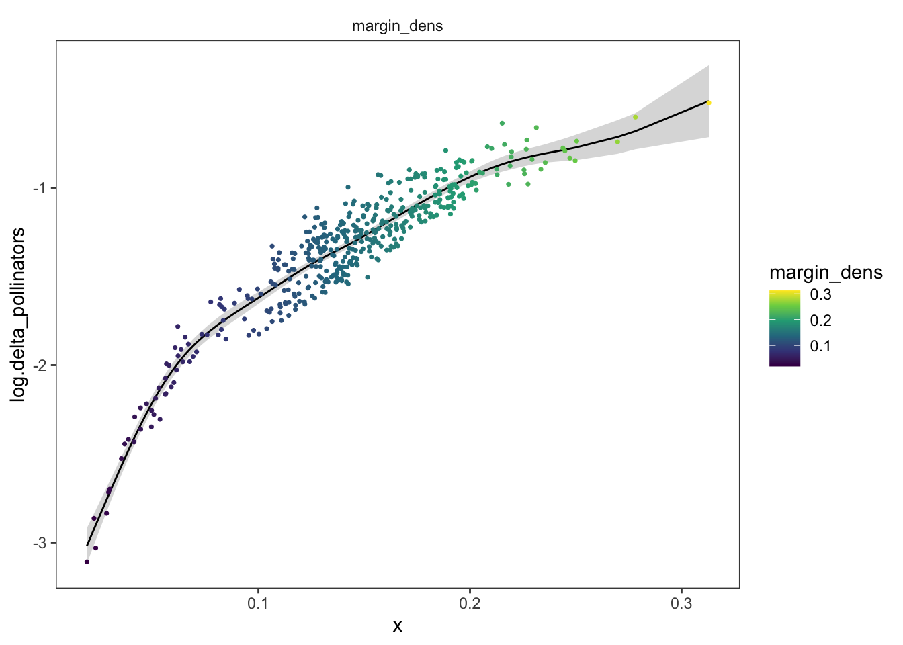
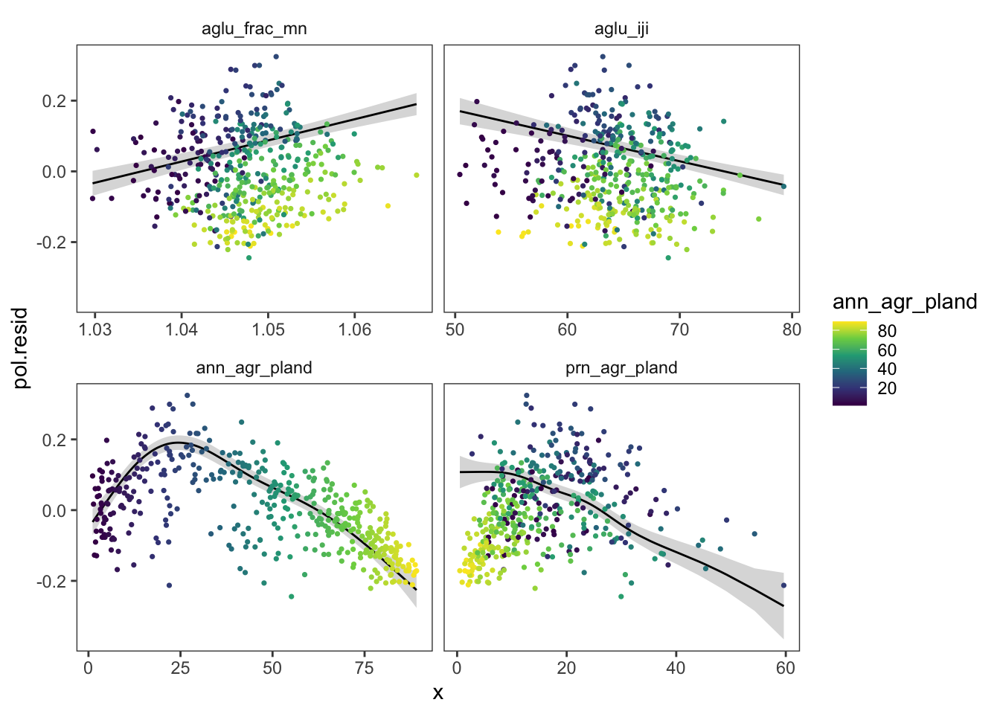
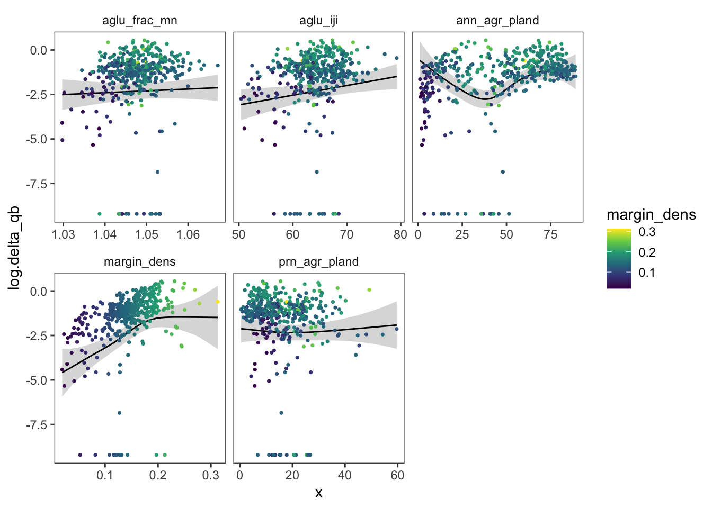

pol.lm0 <- gam(log.delta_pollinators ~ margin_dens, data = wfs_lsm)
pol.gam0 <- gam(log.delta_pollinators ~ s(margin_dens), data = wfs_lsm)
anova(pol.lm0, pol.gam0)## Analysis of Deviance Table
##
## Model 1: log.delta_pollinators ~ margin_dens
## Model 2: log.delta_pollinators ~ s(margin_dens)
## Resid. Df Resid. Dev Df Deviance F Pr(>F)
## 1 435.00 10.0676
## 2 427.29 5.4886 7.7117 4.5791 46.309 < 2.2e-16 ***
## ---
## Signif. codes: 0 '***' 0.001 '**' 0.01 '*' 0.05 '.' 0.1 ' ' 1pol.gam1 <- gam(log.delta_pollinators ~ s(ann_agr_pland) + s(aglu_iji) + s(prn_agr_pland) + s(aglu_frac_mn) + s(margin_dens) + s(lu_shdi),
data = wfs_lsm)
performance::compare_performance(pol.lm0, pol.gam0, pol.gam1)## Some of the nested models seem to be identical## # Comparison of Model Performance Indices
##
## Name | Model | AIC (weights) | AICc (weights) | BIC (weights) | R2 | RMSE | Sigma
## ----------------------------------------------------------------------------------------------
## pol.lm0 | gam | -401.6 (<.001) | -401.5 (<.001) | -389.4 (<.001) | 0.843 | 0.152 | 0.152
## pol.gam0 | gam | -652.8 (<.001) | -652.3 (<.001) | -612.2 (<.001) | 0.913 | 0.112 | 0.113
## pol.gam1 | gam | -1250.9 (>.999) | -1246.6 (>.999) | -1131.7 (>.999) | 0.979 | 0.054 | 0.056summary(pol.gam1)##
## Family: gaussian
## Link function: identity
##
## Formula:
## log.delta_pollinators ~ s(ann_agr_pland) + s(aglu_iji) + s(prn_agr_pland) +
## s(aglu_frac_mn) + s(margin_dens) + s(lu_shdi)
##
## Parametric coefficients:
## Estimate Std. Error t value Pr(>|t|)
## (Intercept) -1.344047 0.002675 -502.4 <2e-16 ***
## ---
## Signif. codes: 0 '***' 0.001 '**' 0.01 '*' 0.05 '.' 0.1 ' ' 1
##
## Approximate significance of smooth terms:
## edf Ref.df F p-value
## s(ann_agr_pland) 5.368 6.553 92.632 <2e-16 ***
## s(aglu_iji) 1.000 1.000 57.832 <2e-16 ***
## s(prn_agr_pland) 6.066 7.268 40.012 <2e-16 ***
## s(aglu_frac_mn) 3.469 4.439 12.762 <2e-16 ***
## s(margin_dens) 8.480 8.917 574.438 <2e-16 ***
## s(lu_shdi) 2.827 3.656 2.206 0.0763 .
## ---
## Signif. codes: 0 '***' 0.001 '**' 0.01 '*' 0.05 '.' 0.1 ' ' 1
##
## R-sq.(adj) = 0.979 Deviance explained = 98%
## GCV = 0.003344 Scale est. = 0.0031281 n = 437concurvity(pol.gam1)## para s(ann_agr_pland) s(aglu_iji) s(prn_agr_pland) s(aglu_frac_mn) s(margin_dens)
## worst 5.890479e-25 0.8912197 0.6995208 0.7829295 0.6886298 0.8374435
## observed 5.890479e-25 0.7709157 0.6662133 0.6142880 0.5881407 0.7928102
## estimate 5.890479e-25 0.8110309 0.5771170 0.5064119 0.4851594 0.5937077
## s(lu_shdi)
## worst 0.7308447
## observed 0.6736699
## estimate 0.5673864polplot.df <- plot_fun(pol.gam1,
c("ann_agr_pland", "aglu_iji", "prn_agr_pland", "aglu_frac_mn", "margin_dens"),
wfs_lsm)
ggplot(polplot.df[[1]], aes(x, log.delta_pollinators)) +
geom_ribbon(aes(ymin = conf.low, ymax = conf.high), alpha = 0.2) + geom_line() +
geom_point(data = polplot.df[[2]],
mapping = aes(color = margin_dens),
size = 0.6) + scale_color_continuous(type = "viridis") +
facet_wrap(~pred.var, scales = "free_x") +
egg::theme_article()
polplot0.df <- plot_fun(pol.gam0,
"margin_dens",
wfs_lsm)
ggplot(polplot0.df[[1]], aes(x, log.delta_pollinators)) +
geom_ribbon(aes(ymin = conf.low, ymax = conf.high), alpha = 0.2) + geom_line() +
geom_point(data = polplot0.df[[2]],
mapping = aes(color = margin_dens),
size = 0.6) + scale_color_continuous(type = "viridis") +
facet_wrap(~pred.var, scales = "free_x") +
egg::theme_article()
Trying to account for the effect of margins first
wfs_lsm_resids <- wfs_lsm %>% cbind(pol.resid = residuals(pol.gam0))
polresid.gam1 <- gam(pol.resid ~ s(ann_agr_pland) + s(aglu_iji) + s(prn_agr_pland) + s(aglu_frac_mn) + s(lu_shdi),
data = wfs_lsm_resids)
summary(polresid.gam1)##
## Family: gaussian
## Link function: identity
##
## Formula:
## pol.resid ~ s(ann_agr_pland) + s(aglu_iji) + s(prn_agr_pland) +
## s(aglu_frac_mn) + s(lu_shdi)
##
## Parametric coefficients:
## Estimate Std. Error t value Pr(>|t|)
## (Intercept) -1.428e-16 2.869e-03 0 1
##
## Approximate significance of smooth terms:
## edf Ref.df F p-value
## s(ann_agr_pland) 5.959 7.139 76.34 < 2e-16 ***
## s(aglu_iji) 1.000 1.000 53.88 < 2e-16 ***
## s(prn_agr_pland) 5.426 6.615 35.17 < 2e-16 ***
## s(aglu_frac_mn) 1.000 1.000 63.31 < 2e-16 ***
## s(lu_shdi) 2.359 3.051 4.06 0.00652 **
## ---
## Signif. codes: 0 '***' 0.001 '**' 0.01 '*' 0.05 '.' 0.1 ' ' 1
##
## R-sq.(adj) = 0.714 Deviance explained = 72.4%
## GCV = 0.0037414 Scale est. = 0.0035981 n = 437concurvity(polresid.gam1)## para s(ann_agr_pland) s(aglu_iji) s(prn_agr_pland) s(aglu_frac_mn) s(lu_shdi)
## worst 5.223854e-25 0.7896108 0.6818488 0.7524929 0.6555056 0.6444388
## observed 5.223854e-25 0.6910831 0.6428548 0.5375167 0.5896608 0.5716857
## estimate 5.223854e-25 0.7235572 0.5471598 0.4679625 0.4491356 0.4488346residpolplot.df <- plot_fun(polresid.gam1,
c("ann_agr_pland", "aglu_iji", "prn_agr_pland", "aglu_frac_mn"),
wfs_lsm_resids,
"ann_agr_pland")
ggplot(residpolplot.df[[1]], aes(x, pol.resid)) +
geom_ribbon(aes(ymin = conf.low, ymax = conf.high), alpha = 0.2) + geom_line() +
geom_point(data = residpolplot.df[[2]],
mapping = aes(color = ann_agr_pland),
size = 0.6) + scale_color_continuous(type = "viridis") +
facet_wrap(~pred.var, scales = "free_x") +
egg::theme_article()
swy.lm0 <- gam(log.delta_qb ~ margin_dens, data = wfs_lsm)
swy.gam0 <- gam(log.delta_qb ~ s(margin_dens), data = wfs_lsm)
anova(swy.lm0, swy.gam0)## Analysis of Deviance Table
##
## Model 1: log.delta_qb ~ margin_dens
## Model 2: log.delta_qb ~ s(margin_dens)
## Resid. Df Resid. Dev Df Deviance F Pr(>F)
## 1 435.00 1101.4
## 2 430.66 1064.6 4.3436 36.799 3.4357 0.007098 **
## ---
## Signif. codes: 0 '***' 0.001 '**' 0.01 '*' 0.05 '.' 0.1 ' ' 1swy.gam1 <- gam(log.delta_qb ~ s(ann_agr_pland) + s(aglu_iji) + s(prn_agr_pland) + s(aglu_frac_mn) + s(margin_dens) + s(lu_shdi),
data = wfs_lsm)
performance::compare_performance(swy.lm0, swy.gam0, swy.gam1)## Some of the nested models seem to be identical## # Comparison of Model Performance Indices
##
## Name | Model | AIC (weights) | AICc (weights) | BIC (weights) | R2 | RMSE | Sigma
## -------------------------------------------------------------------------------------------
## swy.lm0 | gam | 1650.1 (<.001) | 1650.2 (<.001) | 1662.4 (0.802) | 0.128 | 1.588 | 1.591
## swy.gam0 | gam | 1641.8 (<.001) | 1642.0 (<.001) | 1667.4 (0.063) | 0.151 | 1.561 | 1.570
## swy.gam1 | gam | 1577.4 (>.999) | 1579.8 (>.999) | 1665.9 (0.135) | 0.292 | 1.400 | 1.434summary(swy.gam1)##
## Family: gaussian
## Link function: identity
##
## Formula:
## log.delta_qb ~ s(ann_agr_pland) + s(aglu_iji) + s(prn_agr_pland) +
## s(aglu_frac_mn) + s(margin_dens) + s(lu_shdi)
##
## Parametric coefficients:
## Estimate Std. Error t value Pr(>|t|)
## (Intercept) -1.5064 0.0686 -21.96 <2e-16 ***
## ---
## Signif. codes: 0 '***' 0.001 '**' 0.01 '*' 0.05 '.' 0.1 ' ' 1
##
## Approximate significance of smooth terms:
## edf Ref.df F p-value
## s(ann_agr_pland) 4.524 5.604 7.054 1.62e-06 ***
## s(aglu_iji) 1.000 1.000 5.547 0.019 *
## s(prn_agr_pland) 1.746 2.222 0.556 0.629
## s(aglu_frac_mn) 1.000 1.000 0.329 0.567
## s(margin_dens) 3.211 4.112 9.988 < 2e-16 ***
## s(lu_shdi) 8.214 8.823 4.097 3.74e-05 ***
## ---
## Signif. codes: 0 '***' 0.001 '**' 0.01 '*' 0.05 '.' 0.1 ' ' 1
##
## R-sq.(adj) = 0.292 Deviance explained = 32.4%
## GCV = 2.1587 Scale est. = 2.0564 n = 437concurvity(swy.gam1)## para s(ann_agr_pland) s(aglu_iji) s(prn_agr_pland) s(aglu_frac_mn) s(margin_dens)
## worst 5.890479e-25 0.8912197 0.6995208 0.7829295 0.6886298 0.8374435
## observed 5.890479e-25 0.6045982 0.6662133 0.4745638 0.6116032 0.7158746
## estimate 5.890479e-25 0.8110309 0.5771170 0.5064119 0.4851594 0.5937077
## s(lu_shdi)
## worst 0.7308447
## observed 0.2483719
## estimate 0.5673864swyplot.df <- plot_fun(swy.gam1,
c("ann_agr_pland", "aglu_iji", "prn_agr_pland", "aglu_frac_mn", "margin_dens"),
wfs_lsm)
ggplot(swyplot.df[[1]], aes(x, log.delta_qb)) +
geom_ribbon(aes(ymin = conf.low, ymax = conf.high), alpha = 0.2) + geom_line() +
geom_point(data = swyplot.df[[2]],
mapping = aes(color = margin_dens),
size = 0.6) + scale_color_continuous(type = "viridis") +
facet_wrap(~pred.var, scales = "free_x") +
egg::theme_article()